AI Website Redesign Automation
For UI/UX designers and freelancers who want to automate website redesign lead generation.
Instead of manually redesigning every prospect's website before contacting them, the automation can process a list of potential clients, analyze their existing websites, generate redesign instructions, create redesigned web experiences through the configured website-generation provider, capture the results, and save the output locally.
Tool Download & Set up
I haven't included a public download link for this project yet. To get the project files, download the tool, and receive setup assistance, please contact me personally via WhatsApp.
For the private API credentials required to run this tool, please contact me personally via WhatsApp.
The Complete Journey
Client CSV → Website Analysis → Redesign Prompt → Website Generation → Screenshot → Local Storage
This guide is intentionally focused on setup and usage. The project ZIP contains the deeper technical documentation and implementation details. Use this page when you simply want to get the tool running.
01 Open the Project in Antigravity
Extract the project ZIP and open the extracted project folder in Antigravity IDE. This is the working project that the AI agent will configure and run for you.
Then open the Agent panel and use the following instruction:
Truncate the project and provide a fresh new startWhy this step matters: This tells the coding agent to treat the project as a fresh working setup rather than assuming that an old local runtime, previous configuration, or previous execution state is still valid.
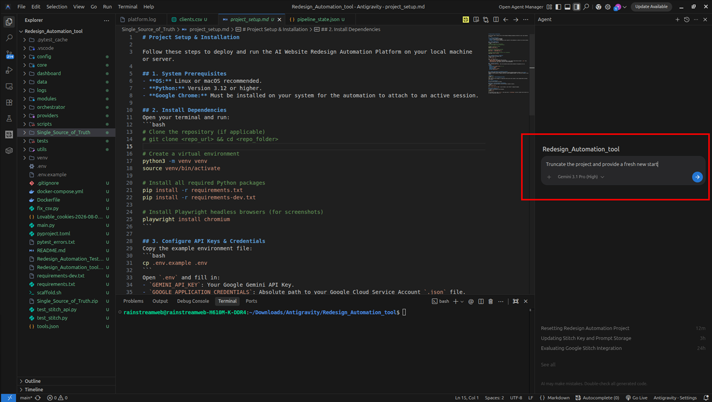
02 Create Your Google Stitch API Key
Open Google Stitch in a new browser tab. Go to your account settings and scroll down until you find the Create API option.
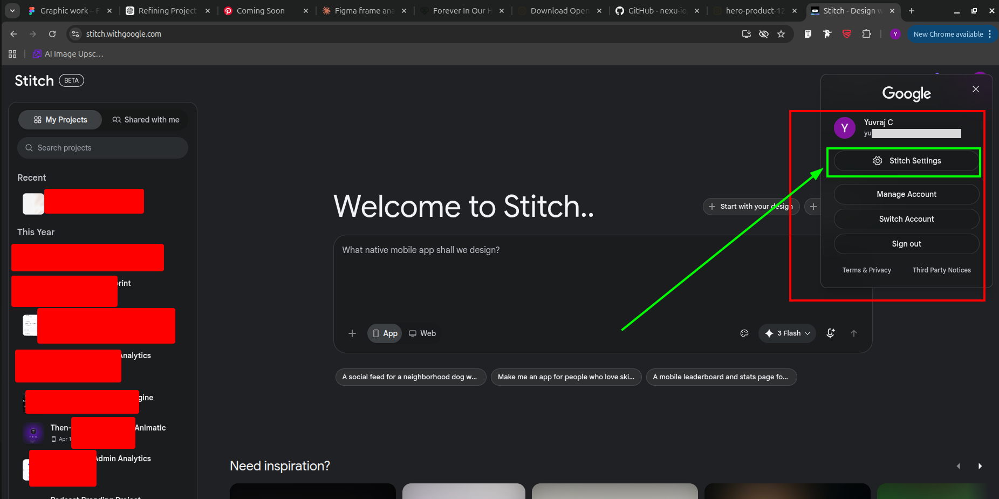
Generate a new API key and copy it. This key is required because the automation uses your Google Stitch account to generate the redesigned website.
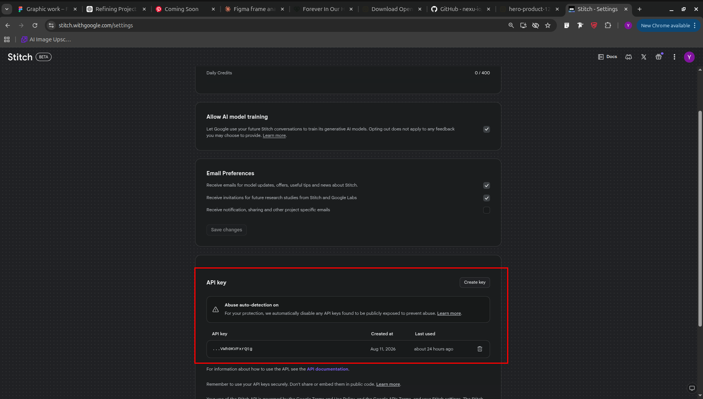
Do not paste the API key into a public document, GitHub repository, screenshot, or public website. Only add it to your local environment configuration.
03 Create the Environment Configuration
Return to Antigravity and ask the agent to create the project's .env file. The exact private credentials required for your setup should be provided to the user separately.
Create the .env file and add the required project credentials.
For the private credential values, contact me directly.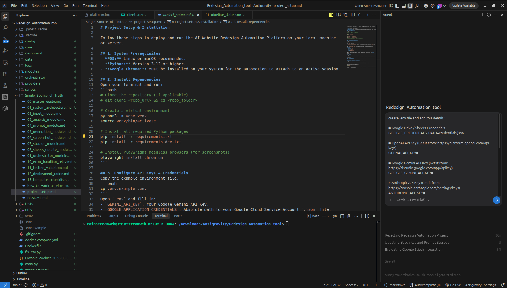
04 Replace the Google Stitch API Key
Open the newly created .env file. Find the Google Stitch API-key field and replace the placeholder value with the API key you generated in Step 02.
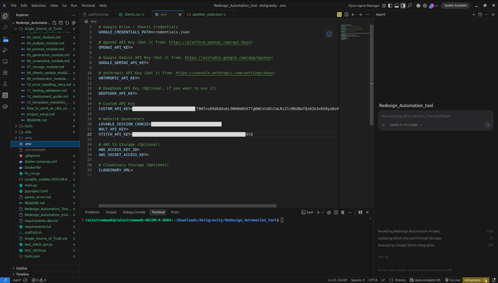
Check before continuing: Make sure the key is entered in the correct environment variable and that there are no accidental spaces, quotation mistakes, or missing characters. Save the file before starting the automation.
05 Start the Automation
Once the environment is configured, ask the Antigravity agent to check the setup documentation and start both the backend pipeline and the frontend dashboard.
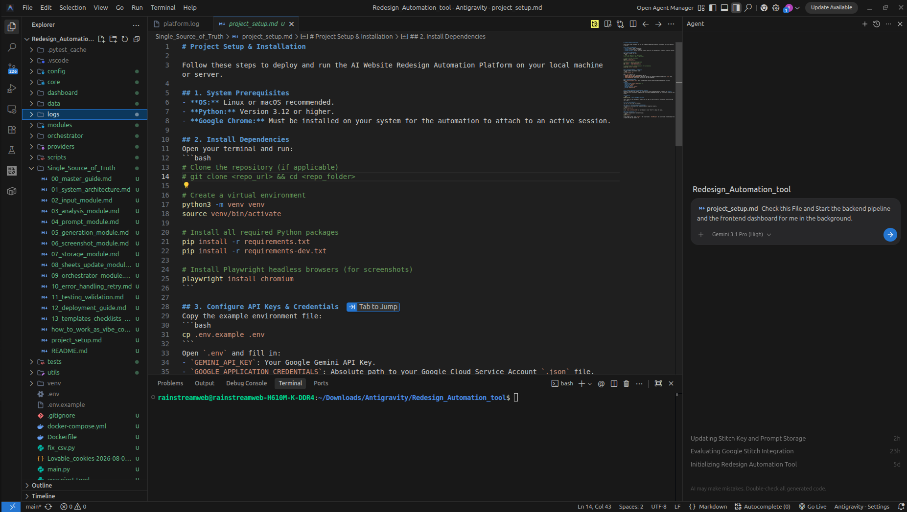
Check project_setup.md and Start the backend pipeline and the frontend dashboard for me in the background.Or run the services yourself from the terminal:
# Frontend Dashboard
bash scripts/run.sh
# Alternative dashboard command
venv/bin/python dashboard/app.py
# Backend Pipeline
venv/bin/python main.py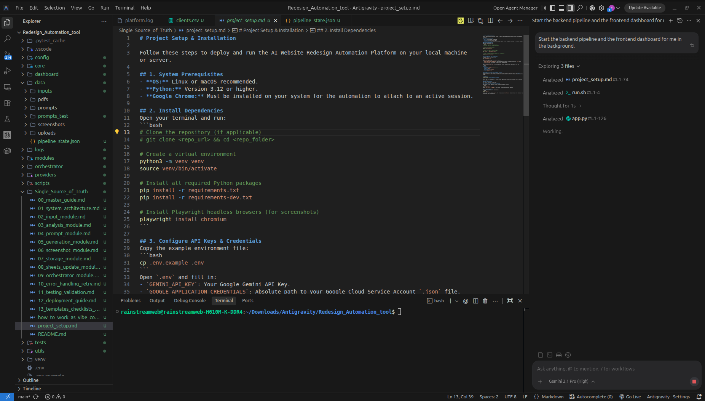
06 Open the Automation Dashboard
When the dashboard is running, open the local URL shown in the previous step (e.g., http://127.0.0.1:5000). The dashboard is the control point where you can see that the automation is running.
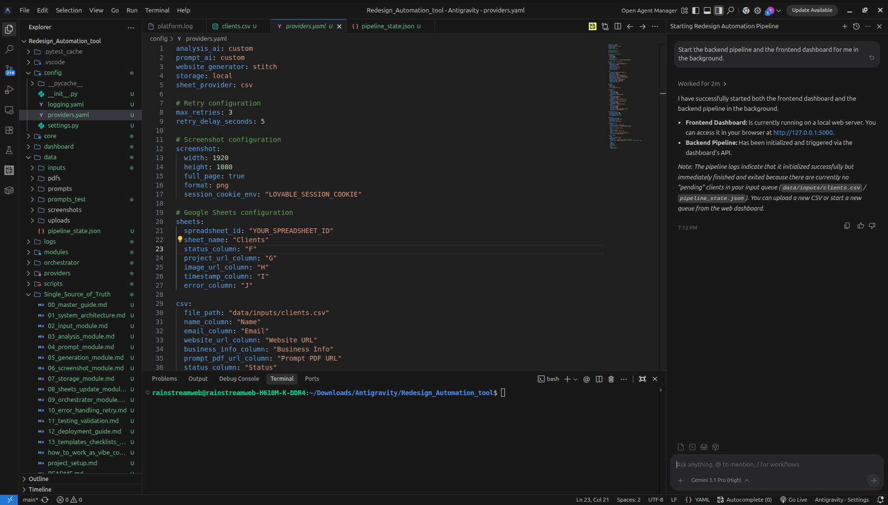
07 Verify That the Automation Is Running
After opening the dashboard URL, you should be redirected to the local automation interface. This is where you can visually verify that the application is active and ready to process your client list.
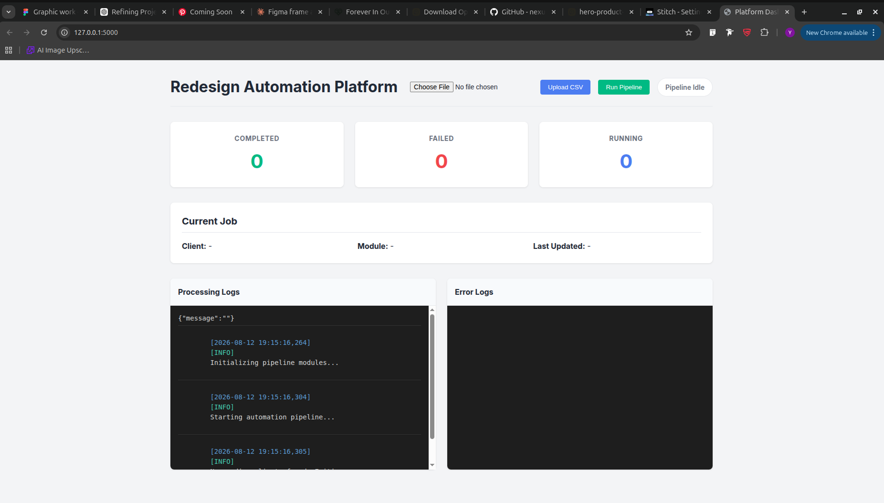
08 Upload Your Website List
Now prepare the bulk list of potential freelance leads in the CSV format supported by the project. The CSV contains the website/client information that the automation will process.
For the first test, use a small list rather than a large production file. Confirm that one or two websites complete successfully before processing the full lead list.
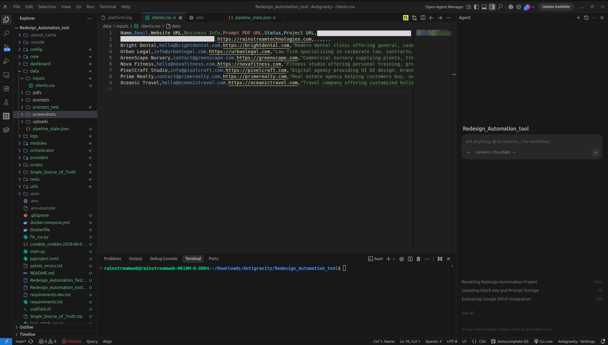
09 Let the Automation Process the Leads
After the CSV is provided, the automation handles the repetitive workflow for each website.
10 Find the Generated Results
The automation stores the generated redesign prompts and website-related outputs locally on your computer. Use the project's configured output folders to review the results.
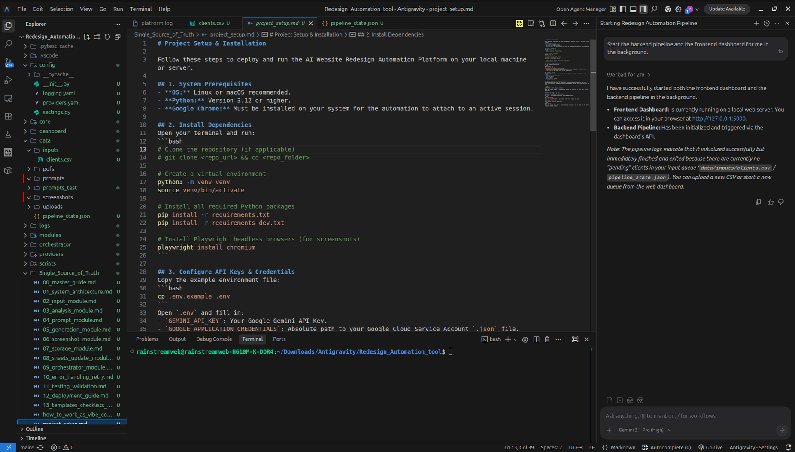
11 Review the Redesigned Website
The generated website can also be reviewed inside your Google Stitch account. This gives you the full generated design rather than only the local screenshot/output.
Quick Start Checklist
- Project extracted and opened in Antigravity
- Fresh project start completed
- Google Stitch API key generated
- .env created
- Private credentials added securely
- Google Stitch API key added to .env
- Dashboard and backend started
- Local dashboard opens successfully
- CSV uses the provided format
- First test performed with a small list
- Generated prompt and website output verified